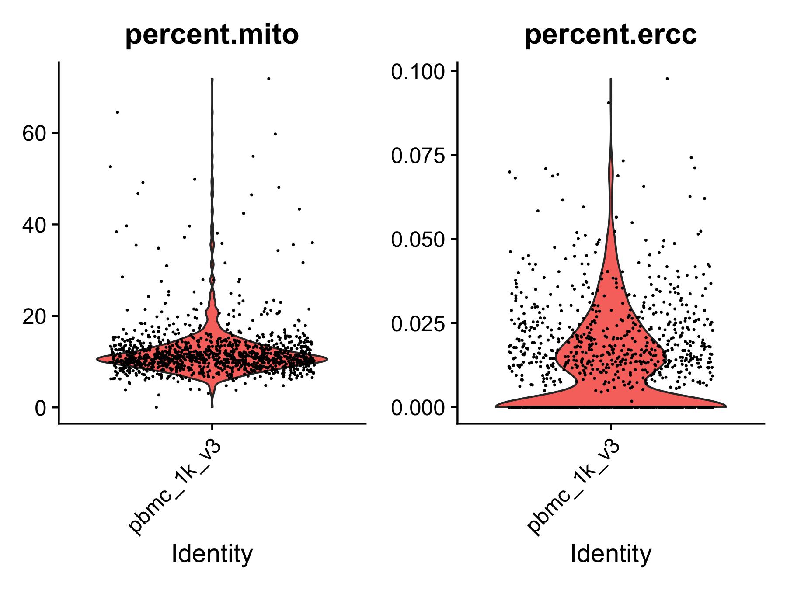
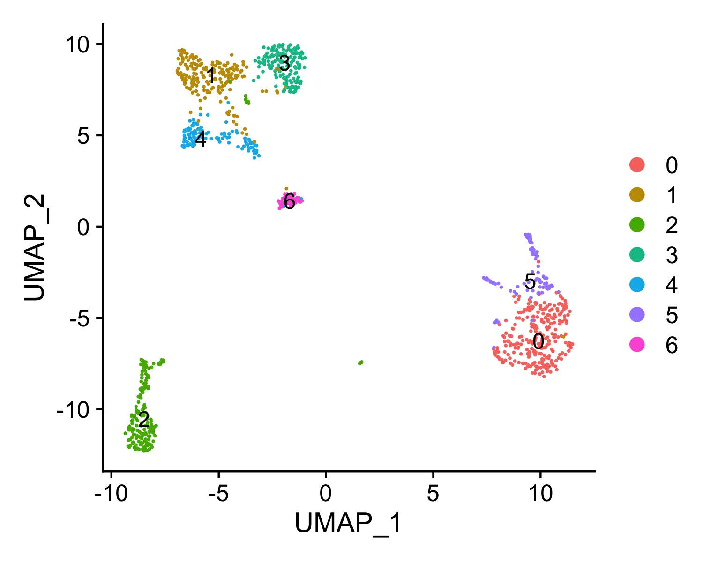
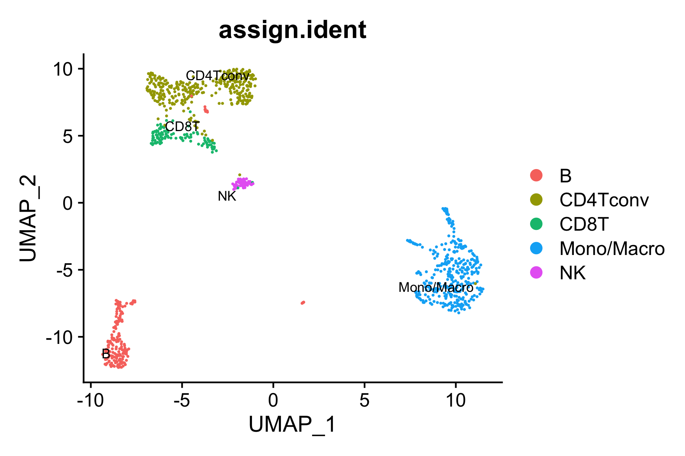
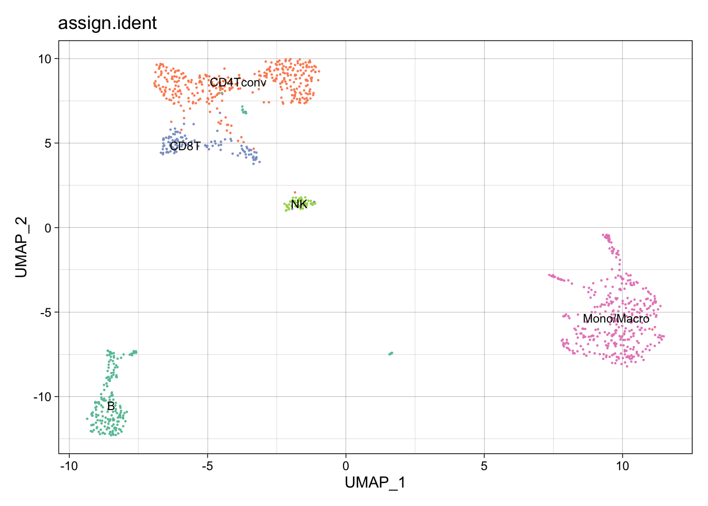
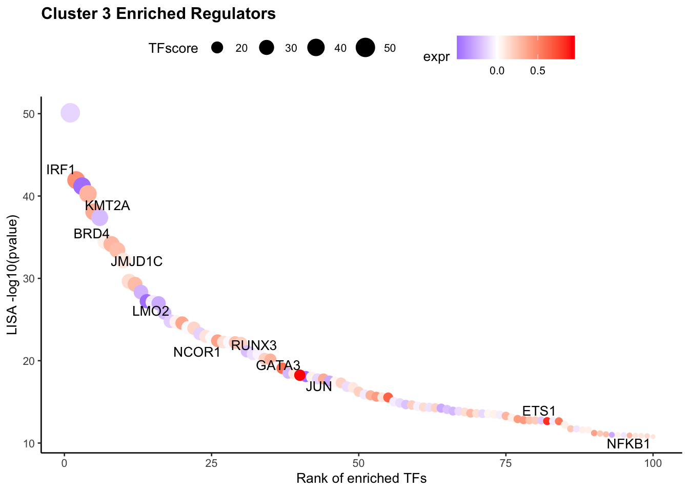
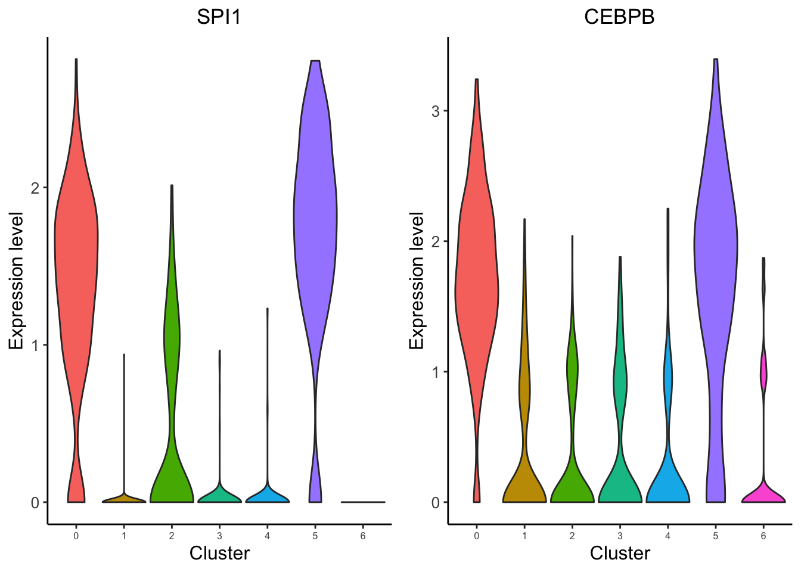
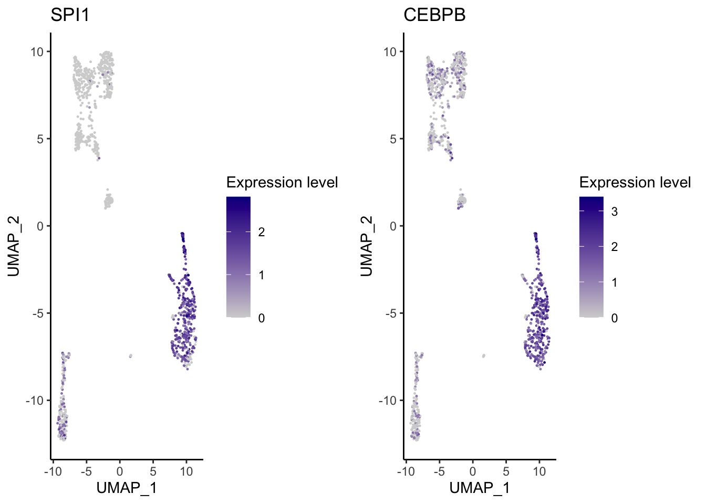

scRNA-seq custom analysis
Gali Bai
2021-06-07
Last updated: 2021-07-27
Checks: 7 0
Knit directory: MAESTRO_documentation/
This reproducible R Markdown analysis was created with workflowr (version 1.6.2). The Checks tab describes the reproducibility checks that were applied when the results were created. The Past versions tab lists the development history.
Great! Since the R Markdown file has been committed to the Git repository, you know the exact version of the code that produced these results.
Great job! The global environment was empty. Objects defined in the global environment can affect the analysis in your R Markdown file in unknown ways. For reproduciblity it’s best to always run the code in an empty environment.
The command set.seed(20201223) was run prior to running the code in the R Markdown file. Setting a seed ensures that any results that rely on randomness, e.g. subsampling or permutations, are reproducible.
Great job! Recording the operating system, R version, and package versions is critical for reproducibility.
Nice! There were no cached chunks for this analysis, so you can be confident that you successfully produced the results during this run.
Great job! Using relative paths to the files within your workflowr project makes it easier to run your code on other machines.
Great! You are using Git for version control. Tracking code development and connecting the code version to the results is critical for reproducibility.
The results in this page were generated with repository version 4a7b06f. See the Past versions tab to see a history of the changes made to the R Markdown and HTML files.
Note that you need to be careful to ensure that all relevant files for the analysis have been committed to Git prior to generating the results (you can use wflow_publish or wflow_git_commit). workflowr only checks the R Markdown file, but you know if there are other scripts or data files that it depends on. Below is the status of the Git repository when the results were generated:
Ignored files:
Ignored: .DS_Store
Ignored: .RData
Ignored: .Rhistory
Ignored: .Rproj.user/
Ignored: analysis/.DS_Store
Ignored: code/.DS_Store
Ignored: data/.DS_Store
Ignored: data/multi-scatac/.DS_Store
Ignored: data/multi-scrna/
Untracked files:
Untracked: .RDataTmp
Untracked: code/snRNA_genelength.R
Untracked: code/snRNA_genelength_TPM.R
Untracked: data/allen/
Untracked: data/multi-scatac/bed/
Untracked: data/multi-scatac/bigwig/GDF7_bed_added.png
Untracked: output/snRNA_TPM_VS_genelength.png
Untracked: output/snRNA_genelengthVSLognormUMI.png
Untracked: output/snRNA_genelengthVSUMI.png
Unstaged changes:
Deleted: MultiSample_scATACseq.Rproj
Deleted: atac_pbmc_500_nextgem.GIGGLE/0.peaks.bed
Deleted: atac_pbmc_500_nextgem.GIGGLE/0.peaks.bed.gz
Deleted: atac_pbmc_500_nextgem.GIGGLE/0.peaks.bed.result.xls
Modified: code/Basic_Operations.R
Modified: pbmc_1k_v3_8k_res.rds
Modified: pbmc_1k_v3_Monocyte_filtered.pdf
Modified: pbmc_1k_v3_Monocyte_top.pdf
Note that any generated files, e.g. HTML, png, CSS, etc., are not included in this status report because it is ok for generated content to have uncommitted changes.
There are no past versions. Publish this analysis with wflow_publish() to start tracking its development.
Perform custom analysis from the pipeline output
Although MAESTRO will generate all the analysis results through the snakemake-based workflow, in most cases, users might focus on specific clusters or sub-clusters or want to tune some of the parameters to improve the results. Then users can utilize the stand-alone MAESTRO R package, which has been installed in the MAESTRO conda environment, to perform custom analysis from the processed dataset (gene by cell count matrix). We will show you how to run through the downstream analysis using the R package step by step.
Step 0. Read data
First users need to read the gene expression count matrix generated by MAESTRO pipeline into the R environment. To support the processing of large datasets, in MAESTRO we use HDF5 format for all the expression, atac-seq peak count and RP tables.
library(MAESTRO)Registered S3 method overwritten by 'cli':
method from
print.boxx spatstat.geomlibrary(Seurat)Attaching SeuratObject#Here, user need to get the .h5 matrix under path scRNA/pbmc_1k_v3/Result/QC/pbmc_1k_v3_filtered_gene_count.h5
pbmc.gene <- Read10X_h5("./data/scrna/pbmc_1k_v3_filtered_gene_count.h5")Warning in sparseMatrix(i = indices[] + 1, p = indptr[], x = as.numeric(x =
counts[]), : 'giveCsparse' has been deprecated; setting 'repr = "T"' for youWe also support the processed dataset from 10x Cell Ranger pipeline or STARsolo. Users can load the gene matrix into R through Read10X function in Seurat package
pbmc.gene <- Read10X('Result/STAR/pbmc_1k_v3Solo.out/Gene/filtered')Step 1. Perform clustering and differential gene analysis
We next create a Seurat object using the gene expression matrix and perform the clustering analysis as well as differential gene analysis for different clusters. RNARunSeurat() function in MAESTRO integrates multiple functions of Seurat and perform the routine analysis as follows.
- Single-cell level quality control
- Cell and gene coverage: Cells with less than 200 genes expressed, and genes expressed in less than 10 cells will be removed from the analysis.
- Mitochondrial gene and ERCC: If
mito = TRUEandmito.cutoff = 20is set, we will also filter the cells with more than 20% mitochondrial reads or more than 5% ERCC spike-ins. Mitochondrial genes are expressed in most cells and their expression level is specific to cell types. High expression level (i.e., high percentage) of mitochondrial genes could be detected from apoptotic or lysing cells, which should not be included in the analysis. ERCC spike-ins are used to estimate total mRNA content captured in cells. High level of ERCC is likely caused by cell death. Similarly, cells with a high percentage of ERCC need to be filtered.
- Normalization
- Removing unwanted confounding factors: Single cells may contain unwanted sources of variation, such as technical noise. These factors may have a disturbing effect on downstream analysis and should be removed out. Seurat provides a function to regress user-defined variables out.
- Variance shrinkage and high-variance gene identification: Based on the assumption that the expression level of most genes in all cells is similar, variance adjustment is needed to preserve biological variation and minimize unknown experiment variation. After shrinking variance, really highly variable genes are identified and only the top 2000 variable genes are used in the downstream analysis.
- Analysis
- Dimension reduction and determining significant components: MAESTRO performed PCA on top variable features to reduce the dimension of the dataset. An elbow plot is generated to visualize the variance of each PC and identify the “elbow” point to determine the significant PCs. If not set, the top 15 PCs will be selected by default for downstream analysis.
- Clustering: MAESTRO employs the graph-based clustering method in Seurat for scRNA-seq clustering analysis. Please see Seurat for the details. Briefly, MAESTRO will build a K-nearest neighbor (KNN) graph using the reduced dimensions from the previous step, and then refine the edge weights between two cells based on the Jaccard similarity of their neighborhoods, which are completed by the
FindNeighborsfunction in Seurat. To cluster the cells, MAESTRO uses theFindClustersfunction in Seurat, which applies the Louvain algorithm to cluster cells together iteratively. The default clustering resolution for scRNA-seq is set to 0.6, and users can also tune the parameter for different conditions. Besides, extra parameters forFindNeighborsandFindClusterscan be passed viafindneighbors.argsandfindclusters.args. For example, users can setfindneighbors.args = list(k.param = 25)to define k = 25 for the k-nearest neighbor algorithm. - UMAP visualization: UMAP is used to visualize all the single cells. MAESTRO adopts UMAP to achieve a low dimension embedding, in which similar cells are placed together. To get a better result for visualization, users can tune the parameters of
RunUMAPby adding the arguments inRNARunSeuratfunction, likeRNARunSeurat(inputMat = pbmc.gene, ..., n.neighbors = 20, min.dist = 0.2). - Differential gene analysis: The default differential expression method is presto, a fast version of Wilcoxon test. Users can also use other model-based methods like DESeq2 and MAST. These methods have been integrated into
FindAllMarkersfunction in Seurat. We provideFindAllMarkersMAESTROfunction in MAESTRO, which is adapted fromFindAllMarkers, to reduce the computational time and memory. Genes with logFC greater than 0.25, minimum presence faction in cells of 0.1, and p-value less than 1E-5 are identified as marker genes for each cluster.
pbmc.RNA.res <- RNARunSeurat(inputMat = pbmc.gene,
project = "pbmc_1k_v3",
orig.ident = NULL,
min.c = 10,
min.g = 200,
mito = TRUE,
mito.cutoff = 20,
variable.genes = 2000,
organism = "GRCh38",
dims.use = 1:15,
cluster.res = 0.6,
only.pos = FALSE,
genes.test.use = "presto",
genes.cutoff = 1e-05,
genes.pct = 0.1,
genes.logfc = 0.25,
outdir = "./docs/assets/scrna/")Check the mitochondria and spike-in percentage ...Normalization and identify variable genes ...Regressing out nCount_RNA, percent.mito, percent.erccCentering and scaling data matrixPCA analysis ...PC_ 1
Positive: LTB, TRAC, TRBC2, CD3D, LCK, ISG20, IL32, IL7R, TCF7, BCL11B
LDHB, CD27, CD3G, CD69, ARL4C, PEBP1, SPOCK2, MZT2A, CD2, CD247
NOSIP, CD7, TRBC1, AQP3, CD6, PRKCQ-AS1, PRDX2, PLAAT4, GZMM, RORA
Negative: LYZ, FCN1, S100A9, MNDA, S100A8, FGL2, CST3, VCAN, CTSS, SERPINA1
CSTA, NCF2, PSAP, AIF1, KLF4, TYMP, MPEG1, S100A12, GRN, MS4A6A
FTL, CYBB, CD14, CLEC7A, TNFAIP2, LST1, CSF3R, SLC7A7, FCER1G, CD36
PC_ 2
Positive: CD79A, MS4A1, IGHM, BANK1, LINC00926, HLA-DQA1, CD74, CD79B, IGHD, HLA-DQB1
HLA-DRB1, HLA-DRA, CD22, HLA-DPA1, HLA-DPB1, TNFRSF13C, TCL1A, SPIB, HLA-DQA2, AFF3
BCL11A, HLA-DRB6, VPREB3, MEF2C, FCER2, HVCN1, NIBAN3, RALGPS2, IGKC, FCRL1
Negative: IL32, CTSW, GZMM, CD247, LCK, GZMA, CD7, NKG7, S100A4, CD3D
ANXA1, PRF1, KLRB1, CST7, CCL5, PLAAT4, RORA, CD3G, TRAC, KLRG1
ARL4C, IL7R, BCL11B, ZAP70, SAMD3, CD2, SYNE2, MATK, ACTG1, TRBC1
PC_ 3
Positive: GZMB, GNLY, KLRD1, KLRF1, NKG7, CLIC3, SPON2, PRF1, CST7, FGFBP2
ADGRG1, GZMA, CCL4, TRDC, HOPX, TTC38, RHOC, TBX21, IL2RB, MATK
CD160, FCGR3A, APMAP, SH2D1B, CCL5, CTSW, C12orf75, APOBEC3G, PTGDR, MYOM2
Negative: LDHB, IL7R, TCF7, LEF1, MAL, TRABD2A, RCAN3, CD3D, BCL11B, NOSIP
CCR7, TRAC, LTB, CD3G, VIM, CAMK4, CD27, NELL2, PASK, CD5
CHRM3-AS2, FHIT, CD6, FAM153CP, TSHZ2, INPP4B, PRKCQ-AS1, LINC01550, TRAT1, EGR1
PC_ 4
Positive: CAVIN2, PRKAR2B, TUBB1, GNG11, PPBP, PF4, ITGA2B, CLU, GP9, TREML1
ESAM, PTCRA, ANKRD9, CTTN, C2orf88, CD9, GMPR, MPIG6B, TMEM158, TNNC2
ITGB3, MTURN, SPARC, GP1BA, FAXDC2, H2AC6, CXCR2P1, ACRBP, MYLK, LMNA
Negative: TMSB10, MT-CO1, GNLY, KLRD1, NKG7, KLRF1, CST7, SPON2, PRF1, FGFBP2
ADGRG1, GZMA, CCL4, HOPX, APOBEC3G, TTC38, TRDC, GZMB, EFHD2, IL2RB
MATK, TBX21, CD160, FCGR3A, CMC1, ITGB2, CLIC3, S1PR5, SH2D1B, MYOM2
PC_ 5
Positive: CDKN1C, HES4, FCGR3A, TCF7L2, AC104809.2, SIGLEC10, NEURL1, MTSS1, ZNF703, SMIM25
RHOC, CKB, RPS15AP30, IFITM3, C3AR1, IFI30, CSF1R, CAMK1, MYOF, ABI3
MS4A7, RRAS, SECTM1, FAM110A, HMOX1, MS4A4A, FMNL2, GPBAR1, PPM1N, AC064805.1
Negative: SERPINF1, SMPD3, LILRA4, AL096865.1, CLEC4C, TPM2, DERL3, DNASE1L3, PACSIN1, TNFRSF21
GAS6, NRP1, ALOX5AP, ITM2C, IL3RA, MZB1, LAMP5, MYBL2, JCHAIN, SCN9A
LINC01226, BX571818.1, LINC02812, LINC00996, CIB2, SERPINF2, UGCG, CCDC50, APP, RUNX2 UMAP analysis ...Warning: The default method for RunUMAP has changed from calling Python UMAP via reticulate to the R-native UWOT using the cosine metric
To use Python UMAP via reticulate, set umap.method to 'umap-learn' and metric to 'correlation'
This message will be shown once per session10:36:54 UMAP embedding parameters a = 0.9922 b = 1.11210:36:54 Read 1076 rows and found 15 numeric columns10:36:54 Using Annoy for neighbor search, n_neighbors = 3010:36:54 Building Annoy index with metric = cosine, n_trees = 500% 10 20 30 40 50 60 70 80 90 100%[----|----|----|----|----|----|----|----|----|----|**************************************************|
10:36:54 Writing NN index file to temp file /var/folders/bx/3yng1lx579x084wwkjz1xc6c0000gp/T//RtmpPlO4wZ/filebbfc61259b22
10:36:54 Searching Annoy index using 1 thread, search_k = 3000
10:36:54 Annoy recall = 100%
10:36:55 Commencing smooth kNN distance calibration using 1 thread
10:36:56 Initializing from normalized Laplacian + noise
10:36:56 Commencing optimization for 500 epochs, with 43052 positive edges
10:36:58 Optimization finishedWarning: The following arguments are not used: dims1, dims2, dims3, dims4,
dims5, dims6, dims7, dims8, dims9, dims10, dims11, dims12, dims13, dims14,
dims15Warning: The following arguments are not used: dims1, dims2, dims3, dims4,
dims5, dims6, dims7, dims8, dims9, dims10, dims11, dims12, dims13, dims14,
dims15Computing nearest neighbor graph
Computing SNNModularity Optimizer version 1.3.0 by Ludo Waltman and Nees Jan van Eck
Number of nodes: 1076
Number of edges: 32704
Running Louvain algorithm...
Maximum modularity in 10 random starts: 0.8663
Number of communities: 7
Elapsed time: 0 secondsIdentify cluster specific genes ...RNARunSeurat() generates plots of QC and clustering in the current working directory, and returns a list of a Seurat object RNA and dataframe genes. Please see Seurat Github wiki for more details of the Seurat object structure. Users can use the str() command to get an intuitive understanding of the object.
pbmc.RNA.res$RNAAn object of class Seurat
13773 features across 1076 samples within 1 assay
Active assay: RNA (13773 features, 2000 variable features)
2 dimensional reductions calculated: pca, umaphead(pbmc.RNA.res$genes) p_val avg_logFC pct.1 pct.2 p_val_adj cluster gene
1 6.409175e-197 2.984071 0.989 0.064 8.827356e-193 0 S100A12
2 1.711575e-191 2.630080 0.996 0.085 1.178676e-187 0 VCAN
3 1.398256e-180 4.074015 1.000 0.143 6.419391e-177 0 S100A8
4 1.997655e-178 1.882858 0.960 0.076 6.878424e-175 0 CD14
5 5.492107e-176 2.219625 0.996 0.121 1.512856e-172 0 MNDA
6 4.352239e-175 1.620355 0.952 0.077 9.990565e-172 0 AC020656.1In the outdir/ directory you will find the following outputs:


Step 2. Annotate cell types
We next try to annotate different clusters based on their marker genes. We use public immune signatures like CIBERSORT to annotate the clusters. Users can also use their signatures to annotate the clusters. Cell type information is stored in Object@meta.data$assign.ident.
data(human.immune.CIBERSORT)
pbmc.RNA.res$RNA <- RNAAnnotateCelltype(RNA = pbmc.RNA.res$RNA,
gene = pbmc.RNA.res$genes,
signatures = "human.immune.CIBERSORT",
min.score = 0.05,
outdir = "./docs/assets/scrna/")The following `from` values were not present in `x`: ActDCs, ActMast, ActMemCD4Tcells, ActNK, ActpDCs, CD8Tex, Endothelial, Eosinophils, Fibroblasts, MacrophagesM0, MacrophagesM1, MacrophagesM2, MemoryBcells, Myofibroblasts, Neutrophils, PlasmaCells, RestDCs, RestMast, RestpDCs, Tfh, TMKI67, Treghead(pbmc.RNA.res$RNA@meta.data) orig.ident nCount_RNA nFeature_RNA percent.mito percent.ercc
AAACCCAAGGAGAGTA pbmc_1k_v3 8333 2672 11.844474 0.01200048
AAACGCTTCAGCCCAG pbmc_1k_v3 5579 1858 9.302742 0.01792436
AAAGAACAGACGACTG pbmc_1k_v3 4278 1584 6.778869 0.00000000
AAAGAACCAATGGCAG pbmc_1k_v3 2793 1239 7.375582 0.03580380
AAAGAACGTCTGCAAT pbmc_1k_v3 6595 1882 7.172100 0.03032600
AAAGGATAGTAGACAT pbmc_1k_v3 8887 2129 8.765613 0.01125239
RNA_snn_res.0.6 seurat_clusters assign.ident assign.score
AAACCCAAGGAGAGTA 0 0 Mono/Macro 6.686894
AAACGCTTCAGCCCAG 2 2 B 7.863053
AAAGAACAGACGACTG 4 4 CD8T 4.862934
AAAGAACCAATGGCAG 4 4 CD8T 4.862934
AAAGAACGTCTGCAAT 1 1 CD4Tconv 2.714105
AAAGGATAGTAGACAT 2 2 B 7.863053
All the reduction results are stored in Object@reductions. For example, users can use Object@reductions$umap@cell.embeddings to extract the cell embedding result of UMAP for custom plotting. Or users can directly use DimPlot() from Seurat and other functions like theme() from ggplot2 to generate a prettier plot.
library(ggplot2)
library(RColorBrewer)
DimPlot(object = pbmc.RNA.res$RNA, label = TRUE, pt.size = 0.15,
group.by = "assign.ident", label.size = 3,
cols = brewer.pal(8,"Set2")) +
theme_linedraw() + NoLegend()
Step 3. Identify driver transcription regulators
To identify enriched transcription regulators is crucial to understanding gene regulation in the heterogeneous single-cell populations. MAESTRO utilizes LISA to predict the potential transcription factors based on the marker genes in each cluster, which rely on the transcriptional regulator binding profiles from CistromeDB to identify the potential regulators shaping the expression pattern of each cluster. In rare cases, users need to download LISA data manually. If the program fails while downloading data, follow this LISA document. If users have multiple clusters of differential genes, the “multi” mode is recommended.
pbmc.RNA.tfs <- RNAAnnotateTranscriptionFactor(RNA = pbmc.RNA.res$RNA,
genes = pbmc.RNA.res$genes,
project = pbmc.RNA.res$RNA@project.name,
organism = "GRCh38",
lisa.path = "/Users/galib/miniconda3/envs/lisa_env/bin/.venvs/lisa_env/bin/lisa",
top.tf = 10,
outdir = "./docs/assets/scrna/")Start to run Lisa.Lisa in cluster 6 is done!Lisa is done.pbmc.RNA.tfs[["0"]] [1] "SPI1 | IRF1 | BCL6 | STAT2 | IRF8 | STAT1 | STAT3 | IRF2 | STAT5A | IRF3 | BCL11A | STAT5B | IRF4 | PRDM1 | SPIB"
[2] "CEBPD | CEBPB | ATF4 | CEBPA | CEBPG | NFIL3 | DDIT3 | DBP | BATF | CEBPE | BATF3"
[3] "SMAD1"
[4] "KMT2A"
[5] "ELF1 | FLI1 | ETV6 | ETS2 | ELF2 | ELK3 | ELK4 | GABPA | NFAT5 | ELK1 | ELF3 | ETS1 | ETV2"
[6] "BRD4"
[7] "JMJD1C"
[8] "RUNX1 | CBFB | RUNX3 | RUNX2"
[9] "LYL1 | ZBTB18 | TCF4 | TCF12 | ASCL2 | TFAP4 | TCF3 | SNAI1 | GATA3"
[10] "LMO2" Besides identifying TFs for all the clusters, we also support the differential gene list from a single comparison.
de.geneset <- FindMarkersMAESTRO(pbmc.RNA.res$RNA, ident.1 = c(3))
pbmc.RNA.monocyte.tfs <- RNAAnnotateTranscriptionFactor(RNA = pbmc.RNA.res$RNA,
genes = de.geneset,
cluster = c(3),
project = "pbmc_1k_v3_Monocyte",
organism = "GRCh38",
top.tf = 20,
lisa.path = "/Users/galib/miniconda3/envs/lisa_env/bin/.venvs/lisa_env/bin/lisa",
outdir = "./docs/assets/scrna/")Start to run Lisa.Lisa in cluster 3 is done!Lisa is done.Step 4. Visualize driver transcription factors for each cluster
According to the annotation of the clusters, we know that cluster 3 is Monocyte. Next, we want to visualize the enriched regulators in Monocyte from Step 5.
The output TFs returned from RNAAnnotateTranscriptionFactor have already been pre-filtered based on TF expression level.
tfs <- sapply(pbmc.RNA.monocyte.tfs[[1]], function(x){
return(unlist(strsplit(x, split = " | ", fixed = TRUE))[1])})
VisualizeTFenrichment(TFs = tfs,
cluster.1 = 3,
type = "RNA",
SeuratObj = pbmc.RNA.res$RNA,
LISA.table = "pbmc_1k_v3_Monocyte_lisa.txt",
visual.totalnumber = 100,
name = "pbmc_1k_v3_Monocyte_filtered")Warning: Removed 4 rows containing missing values (geom_point).Warning: Removed 4 rows containing missing values (geom_text_repel).Warning: ggrepel: 7 unlabeled data points (too many overlaps). Consider
increasing max.overlapsWarning: Removed 4 rows containing missing values (geom_point).Warning: Removed 4 rows containing missing values (geom_text_repel).Warning: ggrepel: 5 unlabeled data points (too many overlaps). Consider
increasing max.overlaps
| Version | Author | Date |
|---|---|---|
| 6e473ba | baigal628 | 2021-07-19 |
If users want to visualize the top factors without filtering. Please leave the TFs to NULL, then the top 10 regulators will be visualized.
VisualizeTFenrichment(cluster.1 = 3,
type = "RNA",
SeuratObj = pbmc.RNA.res$RNA,
LISA.table = "pbmc_1k_v3_Monocyte_lisa.txt",
visual.topnumber = 10,
visual.totalnumber = 100,
name = "pbmc_1k_v3_Monocyte_top")
| Version | Author | Date |
|---|---|---|
| 6e473ba | baigal628 | 2021-07-19 |
To further filter the regulators, users may want to visualize the expression level of the predicted transcription factors. We provide the function for visualize TF/genes expression level using Vlnplot and Umap.
VisualizeVlnplot(genes = c("SPI1","CEBPB"),
type = "RNA",
SeuratObj = pbmc.RNA.res$RNA,
ncol = 2,
width = 8.5,
height = 4,
name = "pbmc_1k_v3_Monocyte")Warning: CombinePlots is being deprecated. Plots should now be combined using
the patchwork system.
VisualizeUmap(genes = c("SPI1","CEBPB"),
type = "RNA",
SeuratObj = pbmc.RNA.res$RNA,
ncol = 2,
width = 8,
height = 3,
name = "pbmc_1k_v3_Monocyte")Warning: CombinePlots is being deprecated. Plots should now be combined using
the patchwork system.
| Version | Author | Date |
|---|---|---|
| 3e0057c | baigal628 | 2021-07-13 |
Step 5. Save the object for future analysis
Finally, users can save the R object, including the raw data, normalized data, clustering result, and meta information for future analysis.
saveRDS(pbmc.RNA.res, "pbmc_1k_v3_8k_res.rds")
sessionInfo()R version 4.1.0 (2021-05-18)
Platform: x86_64-apple-darwin17.0 (64-bit)
Running under: macOS Big Sur 10.16
Matrix products: default
BLAS: /Library/Frameworks/R.framework/Versions/4.1/Resources/lib/libRblas.dylib
LAPACK: /Library/Frameworks/R.framework/Versions/4.1/Resources/lib/libRlapack.dylib
locale:
[1] en_US.UTF-8/en_US.UTF-8/en_US.UTF-8/C/en_US.UTF-8/en_US.UTF-8
attached base packages:
[1] stats graphics grDevices utils datasets methods base
other attached packages:
[1] RColorBrewer_1.1-2 ggplot2_3.3.5 SeuratObject_4.0.2 Seurat_4.0.1
[5] MAESTRO_1.5.0 workflowr_1.6.2
loaded via a namespace (and not attached):
[1] rappdirs_0.3.3 SnowballC_0.7.0
[3] rtracklayer_1.52.0 scattermore_0.7
[5] tidyr_1.1.3 bit64_4.0.5
[7] knitr_1.33 irlba_2.3.3
[9] DelayedArray_0.18.0 data.table_1.14.0
[11] rpart_4.1-15 KEGGREST_1.32.0
[13] RCurl_1.98-1.3 AnnotationFilter_1.16.0
[15] generics_0.1.0 BiocGenerics_0.38.0
[17] GenomicFeatures_1.44.0 callr_3.7.0
[19] cowplot_1.1.1 usethis_2.0.1
[21] RSQLite_2.2.7 EnsDb.Mmusculus.v79_2.99.0
[23] RANN_2.6.1 future_1.21.0
[25] bit_4.0.4 spatstat.data_2.1-0
[27] xml2_1.3.2 lubridate_1.7.10
[29] httpuv_1.6.1 SummarizedExperiment_1.22.0
[31] assertthat_0.2.1 xfun_0.24
[33] hms_1.1.0 jquerylib_0.1.4
[35] evaluate_0.14 promises_1.2.0.1
[37] fansi_0.5.0 restfulr_0.0.13
[39] progress_1.2.2 caTools_1.18.2
[41] dbplyr_2.1.1 igraph_1.2.6
[43] DBI_1.1.1 htmlwidgets_1.5.3
[45] sparsesvd_0.2 spatstat.geom_2.2-0
[47] stats4_4.1.0 purrr_0.3.4
[49] ellipsis_0.3.2 RSpectra_0.16-0
[51] dplyr_1.0.7 backports_1.2.1
[53] biomaRt_2.48.1 deldir_0.2-10
[55] MatrixGenerics_1.4.0 vctrs_0.3.8
[57] Biobase_2.52.0 remotes_2.4.0
[59] ensembldb_2.16.0 ROCR_1.0-11
[61] abind_1.4-5 cachem_1.0.5
[63] withr_2.4.2 ggforce_0.3.3
[65] presto_1.0.0 checkmate_2.0.0
[67] sctransform_0.3.2 GenomicAlignments_1.28.0
[69] prettyunits_1.1.1 goftest_1.2-2
[71] cluster_2.1.2 lazyeval_0.2.2
[73] crayon_1.4.1 hdf5r_1.3.3
[75] labeling_0.4.2 pkgconfig_2.0.3
[77] slam_0.1-48 tweenr_1.0.2
[79] GenomeInfoDb_1.28.0 nlme_3.1-152
[81] pkgload_1.2.1 ProtGenerics_1.24.0
[83] nnet_7.3-16 devtools_2.4.2
[85] rlang_0.4.11 globals_0.14.0
[87] lifecycle_1.0.0 miniUI_0.1.1.1
[89] filelock_1.0.2 BiocFileCache_2.0.0
[91] rprojroot_2.0.2 polyclip_1.10-0
[93] matrixStats_0.59.0 lmtest_0.9-38
[95] Matrix_1.3-4 ggseqlogo_0.1
[97] zoo_1.8-9 base64enc_0.1-3
[99] whisker_0.4 ggridges_0.5.3
[101] processx_3.5.2 png_0.1-7
[103] viridisLite_0.4.0 rjson_0.2.20
[105] bitops_1.0-7 KernSmooth_2.23-20
[107] Biostrings_2.60.1 blob_1.2.1
[109] stringr_1.4.0 forestplot_1.10.1
[111] parallelly_1.26.0 jpeg_0.1-8.1
[113] S4Vectors_0.30.0 scales_1.1.1
[115] memoise_2.0.0 magrittr_2.0.1
[117] plyr_1.8.6 ica_1.0-2
[119] gplots_3.1.1 zlibbioc_1.38.0
[121] compiler_4.1.0 Gmisc_1.10.0
[123] BiocIO_1.2.0 fitdistrplus_1.1-5
[125] Rsamtools_2.8.0 cli_3.0.0
[127] XVector_0.32.0 listenv_0.8.0
[129] patchwork_1.1.1 pbapply_1.4-3
[131] ps_1.6.0 htmlTable_2.2.1
[133] Formula_1.2-4 MASS_7.3-54
[135] mgcv_1.8-36 tidyselect_1.1.1
[137] stringi_1.6.2 highr_0.9
[139] yaml_2.2.1 latticeExtra_0.6-29
[141] ggrepel_0.9.1 grid_4.1.0
[143] sass_0.4.0 fastmatch_1.1-0
[145] EnsDb.Hsapiens.v86_2.99.0 tools_4.1.0
[147] future.apply_1.7.0 parallel_4.1.0
[149] rstudioapi_0.13 foreign_0.8-81
[151] lsa_0.73.2 git2r_0.28.0
[153] gridExtra_2.3 farver_2.1.0
[155] Rtsne_0.15 digest_0.6.27
[157] shiny_1.6.0 qlcMatrix_0.9.7
[159] Rcpp_1.0.6 GenomicRanges_1.44.0
[161] later_1.2.0 RcppAnnoy_0.0.18
[163] httr_1.4.2 AnnotationDbi_1.54.1
[165] colorspace_2.0-2 XML_3.99-0.6
[167] fs_1.5.0 tensor_1.5
[169] reticulate_1.20 IRanges_2.26.0
[171] splines_4.1.0 uwot_0.1.10
[173] RcppRoll_0.3.0 spatstat.utils_2.2-0
[175] sessioninfo_1.1.1 plotly_4.9.4.1
[177] xtable_1.8-4 jsonlite_1.7.2
[179] testthat_3.0.3 R6_2.5.0
[181] Hmisc_4.5-0 pillar_1.6.1
[183] htmltools_0.5.1.1 mime_0.11
[185] glue_1.4.2 fastmap_1.1.0
[187] BiocParallel_1.26.0 codetools_0.2-18
[189] pkgbuild_1.2.0 Signac_1.2.1
[191] utf8_1.2.1 lattice_0.20-44
[193] bslib_0.2.5.1 spatstat.sparse_2.0-0
[195] tibble_3.1.2 curl_4.3.2
[197] leiden_0.3.8 gtools_3.9.2
[199] survival_3.2-11 rmarkdown_2.9
[201] docopt_0.7.1 desc_1.3.0
[203] munsell_0.5.0 GenomeInfoDbData_1.2.6
[205] reshape2_1.4.4 gtable_0.3.0
[207] spatstat.core_2.2-0